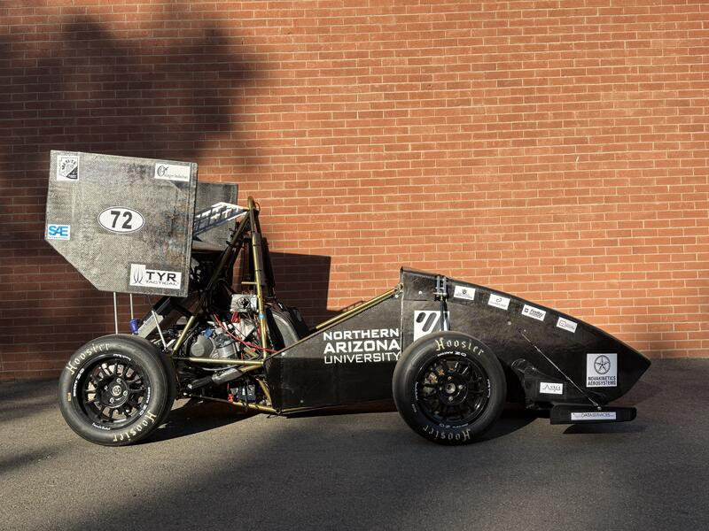

Joseph Ciao
Mechanical engineer combining Formula SAE suspension design, professional-grade lap data analysis workflows, and hands-on reliability engineering. Targeting vehicle evaluation, ride & handling, and motorsport-adjacent data roles.
Projects
Full race engineering workflow for a 5-driver endurance team competing in the iRacing 24 Hours of Le Mans. Setup development, BOP response, structured driver feedback protocol, and multi-timezone stint strategy.

Designed and analyzed the front and rear rockers, pushrods, and damper packaging for Lumberjack Racing's 2025 FSAE car. A waterjet-constrained structural problem — sized to a 500 lb/in spring rate at a 1.4 motion ratio, validated in ANSYS.

Root-cause analysis and materials upgrade for high-span freight elevator guide shoes at Hankook Tire Manufacturing. Material substitution from polymer to brass combined with rail lubrication to reduce wear and improve uptime.
Skills & Tools
About
Mechanical engineer currently working as a Mechanical Utility Engineer at Hankook Tire Manufacturing in Clarksville, TN, focused on reliability engineering for elevators, boilers, air compressors, chillers, and HVAC systems in a high-volume manufacturing environment.
My background spans Formula SAE suspension design, professional-grade driver coaching in Garage 61 and in-depth setup analysis in Cosworth Pi Toolbox, and hands-on endurance race engineering. I hold a B.S. in Mechanical Engineering from Northern Arizona University (2025).
Actively targeting roles in vehicle evaluation, ride & handling, test engineering, and motorsport-adjacent vehicle development. Open to relocation.